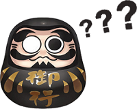

<html>
  <head>
    <meta charset="utf-8">
    <meta name="viewport" content="initial-scale=1, maximum-scale=1, user-scalable=no, width=device-width">
    <title>菜鸟教程(runoob.com)</title>
    <link href="https://cdnjs.cloudflare.com/ajax/libs/ionic/1.3.2/css/ionic.min.css" rel="stylesheet">
    <script src="https://cdnjs.cloudflare.com/ajax/libs/ionic/1.3.2/js/ionic.bundle.min.js"></script>
    <style type="text/css">
    /*御魂布局*/
    	.divMitama{
			float:left;
			width:50%;
    	}  
    	.divMitama img{
			width:80%;
    	}
    /*End*/

    /*保证popover浮动框大小自适应*/
    	.popover {
    		height: auto;
		}
		.popover ion-header-bar {
		    position: relative;
		}
		.popover ion-content {
		    top: 0;
		    position: relative;
		}
	/*End*/

	/*浮动框内容布局*/
		.popover ion-content div{
		    padding: 2px 3px 0px 5px;
		}
		.popover ion-content div p{
		    text-indent: 2em;
		}
	/*End*/

    </style>
    <script type="text/javascript">
    
	    angular.module('starter', ['ionic'])

	    .run(function($ionicPlatform) {
	      $ionicPlatform.ready(function() {
	        // Hide the accessory bar by default (remove this to show the accessory bar above the keyboard
	        // for form inputs)
	        if(window.cordova && window.cordova.plugins.Keyboard) {
	          cordova.plugins.Keyboard.hideKeyboardAccessoryBar(true);
	        }
	        if(window.StatusBar) {
	          // org.apache.cordova.statusbar required
	          StatusBar.styleDefault();
	        }
	      });
	    })

	    .config(function($stateProvider, $urlRouterProvider) {
	      $stateProvider

	        .state('app', {
	          url: "/app",
	          abstract: true,
	          templateUrl: "menu.html",
	          controller: 'AppCtrl'
	        })

	        .state('app.index', {
	          url: "/index",
	          views: {
	            'menuContent' :{
	              templateUrl: "index.html",
	              controller: 'IndexCtrl'
	            }
	          }
	        })

	        .state('app.ojiSkill', {
	          url: "/ojiSkill",
	          views: {
	            'menuContent' :{
	              templateUrl: "ojiSkill.html",
	              controller: 'ojiSkillCtrl'
	            }
	          }
	        })

	        .state('app.shikigami', {
	          url: "/shikigami",
	          views: {
	            'menuContent' :{
	              templateUrl: "shikigami.html",
	              controller: 'ShikigamiCtrl'
	            }
	          }
	        })
	        
	        .state('app.mitama', {
	          url: "/mitama",
	          views: {
	            'menuContent' :{
	              templateUrl: "mitama.html",
	              controller: 'MitamaCtrl'
	            }
	          }
	        })

	        .state('app.oji', {
	          url: "/oji",
	          views: {
	            'menuContent' :{
	              templateUrl: "oji.html",
	              controller: 'OjiCtrl'
	            }
	          }
	        })

	        .state('app.mystery', {
	          url: "/mystery",
	          views: {
	            'menuContent' :{
	              templateUrl: "mystery.html",
	              controller: 'MysteryCtrl'
	            }
	          }
	        })

      		// if none of the above states are matched, use this as the fallback
      		$urlRouterProvider.otherwise('/app/index');
	    })

	    .controller('AppCtrl', function($scope) {
	    })

	    .controller('ojiSkillCtrl', function($scope, $rootScope, $ionicPopover) {
	    	$scope.clickedName = $rootScope.rootName;
	    	$scope.clickedOjiBg = $rootScope.rootBgPath;
	    	$scope.$watch('rootSkills',function(newValue){
        		$scope.skills = $rootScope.rootSkills;
    		});

    		// .fromTemplateUrl() 方法
	        $ionicPopover.fromTemplateUrl('skillPopover.html', {
	          	scope: $scope
	        }).then(function(popover) {
	          	$scope.popover = popover;
	        })
	        $scope.openPopover = function($event, skill) {
	        	$scope.clickedSname = skill.sname;
	        	$scope.clickedSsnippet = skill.ssnippet;
	        	$scope.clickedSlevel = skill.slevel;
	          	$scope.popover.show($event);
	        };
	        $scope.closePopover = function() {
	          	$scope.popover.hide();
	        }
	    })

	    .controller('IndexCtrl', function($scope) {
	    })

	    .controller('ShikigamiCtrl', function($scope) {
	    })

	    .controller('MitamaCtrl', function($scope, $http, $ionicPopover) {
	    	$scope.search = {};
	    	$http.get('data/mitama.json').success(function(data) {
	    		$scope.mitamas = data;
			});

	        // .fromTemplateUrl() 方法
	        $ionicPopover.fromTemplateUrl('mitamaPopover.html', {
	          	scope: $scope
	        }).then(function(popover) {
	          	$scope.popover = popover;
	        })
	        $scope.openPopover = function($event, mitama) {
	        	$scope.clickedName = mitama.name;
	        	$scope.clickedSnippet = mitama.snippet;
	        	$scope.clickedEffect = mitama.effect;
	          	$scope.popover.show($event);
	        };
	        $scope.closePopover = function() {
	          	$scope.popover.hide();
	        }
	    })

	    .controller('OjiCtrl', function($scope, $http, $rootScope) {
	    	
	    	$http.get('data/oji.json').success(function(data) {
	    		$scope.ojis = data;
			});

			$scope.test = function(oji){
				$rootScope.rootName = oji.name;
				$rootScope.rootBgPath = oji.bgPath;

				$http.get(oji.linkToSkill).success(function(data){
					$rootScope.rootSkills = data;
				});
	        }
	    })

	    .controller('MysteryCtrl', function($scope) {
	    })

    </script>

  </head>

  <body ng-app="starter">
    <ion-nav-view></ion-nav-view>
    
    <script id="menu.html" type="text/ng-template">
        
    <ion-side-menus>

      <ion-pane ion-side-menu-content>
        <ion-nav-bar class="bar-calm nav-title-slide-ios7">
          <ion-nav-back-button class="button-clear"><i class="icon ion-chevron-left"></i> Back</ion-nav-back-button>
        </ion-nav-bar>
        <ion-nav-view name="menuContent" animation="slide-left-right"></ion-nav-view>
      </ion-pane>

      <ion-side-menu side="left">
        <header class="bar bar-header bar-calm">
          <h1 class="title">菜单</h1>
        </header>
        <ion-content class="has-header">
          <ion-list>
            <ion-item nav-clear menu-close href="#/app/shikigami">
              式神
            </ion-item>
            <ion-item nav-clear menu-close href="#/app/mitama">
              御魂
            </ion-item>
            <ion-item nav-clear menu-close href="#/app/oji">
              阴阳师
            </ion-item>
            <ion-item nav-clear menu-close href="#/app/mystery">
              神秘妖怪
            </ion-item>
          </ion-list>
        </ion-content>
      </ion-side-menu>
    </ion-side-menus>
    </script>

    <script id="index.html" type="text/ng-template">
	    <ion-view title="Playlists">
		    <ion-nav-buttons side="left">
		    	<button menu-toggle="left" class="button button-icon icon ion-navicon"></button>
		    </ion-nav-buttons>
		    <ion-content>
			    
		    </ion-content>
	    </ion-view>  
    </script>

    <script id="shikigami.html" type="text/ng-template">
	    <ion-view title="式神">
		    <ion-nav-buttons side="left">
		    	<button menu-toggle="left" class="button button-icon icon ion-navicon"></button>
		    </ion-nav-buttons>
		    <div class="content has-header ionic-pseudo">
				<h1>This is the shikigami page.</h1>
			</div>
	    </ion-view>  
    </script>

    <script id="mitama.html" type="text/ng-template">
	    <ion-view title="御魂">
		    <ion-nav-buttons side="left">
		    	<button menu-toggle="left" class="button button-icon icon ion-navicon"></button>
		    </ion-nav-buttons>
		    <ion-content>
		    	<div class="bar bar-header item-input-inset">
	      			<label class="item-input-wrapper">
		        		<i class="icon ion-ios-search placeholder-icon"></i>
		        		<input type="search" placeholder="搜索" ng-model="search.name">
	      			</label>
	      			<select ng-model="search.snippet">
	      				<option value="">全部</option>
					    <option>防御加成</option>
					    <option>生命加成</option>
					    <option>攻击加成</option>
					    <option>效果命中</option>
					    <option>效果抵抗</option>
					    <option>暴击</option>
				    </select>
    			</div>
			    <div class="divMitama" ng-repeat="mitama in filteredMitamas = (mitamas | filter:search ) | orderBy:'path'" style="padding: 4px 0px 4px 8px;">
			    	<a ng-click="openPopover($event, mitama)">
				    	<div style="float: left;">
				    		
				    	</div>
						<div style="float: left;padding-top: 14px;">
							<b>{{mitama.name}}</b><br>
							<b>{{mitama.snippet}}</b>
						</div>										
					</a>
			    </div>
			    <div ng-show="filteredMitamas.length == 0">
			    	<div style="text-align: center;padding-top: 20px;">
			    		
				    	<h4>
				    		没有找到关于"{{search.name}}"的结果
				    	</h4>
			    	</div>
				</div>
				<script id="mitamaPopover.html" type="text/ng-template">
			      	<ion-popover-view>
				        <ion-header-bar>
				          	<h1 class="title" ng-bind="clickedName"></h1>
				        </ion-header-bar>
				        <ion-content scroll="false">
				          	<div>
				          		<label>两件套：</label>
				          		<p ng-bind="clickedSnippet"></p>
				          		<label>四件套：</label>
				          		<p ng-bind="clickedEffect"></p>
				          	</div>
				        </ion-content>
			      	</ion-popover-view>
			    </script> 
			</ion-content>
		</ion-view>  
	</script>

    <script id="mystery.html" type="text/ng-template">
	    <ion-view title="神秘妖怪">
		    <ion-nav-buttons side="left">
		    	<button menu-toggle="left" class="button button-icon icon ion-navicon"></button>
		    </ion-nav-buttons>
		    <div class="content has-header ionic-pseudo">
				<h1>This is the mystery page.</h1>
			</div>
	    </ion-view>  
    </script>

    <!-- 阴阳师 -->
    <script id="oji.html" type="text/ng-template">
	    <ion-view title="阴阳师">
	      	<ion-nav-buttons side="left">
	        	<button menu-toggle="left" class="button button-icon icon ion-navicon"></button>
	      	</ion-nav-buttons>
	      	<ion-content>
				<div class="list">
			      	<a class="item item-avatar" ng-click="test(oji)" href="#/app/ojiSkill" ng-repeat="oji in ojis">
			          	
			          	<h2>{{oji.name}}</h2>
			          	<p>{{oji.snippet}}</p>
			      	</a>
		      	</div>
	      	</ion-content>
		</ion-view>  
    </script>

        <script id="ojiSkill.html" type="text/ng-template">
	    <ion-view title={{clickedName}}>
			<ion-content class="has-header">
				<div style="text-align: center;">
					
				</div>
				<hr>
				<ion-scroll direction="x" scrollbar-x="false">
					<div style="width: 680px;padding: 4px;">
		    			<div ng-repeat="skill in skills" style="float: left;padding: 2px;">
			    			<a ng-click="openPopover($event, skill);">
			    				
			    			</a>
						</div>
					</div>
				</ion-scroll>
				<script id="skillPopover.html" type="text/ng-template">
			      	<ion-popover-view>
				        <ion-header-bar>
				          	<h1 class="title" ng-bind="clickedSname"></h1>
				        </ion-header-bar>
				        <ion-content  scroll="false">
				          	<div>
				          		<p ng-bind="clickedSsnippet"></p>
				          		<hr>
				          		<p ng-repeat="level in clickedSlevel">{{level}}</p>
				          	</div>
				        </ion-content>
			      	</ion-popover-view>
			    </script> 
  			</ion-content>
	    </ion-view>  
    </script>
 
  </body>
</html>